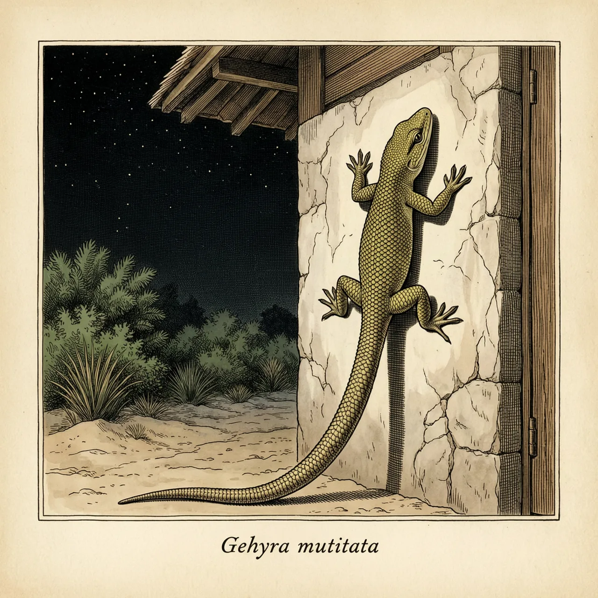
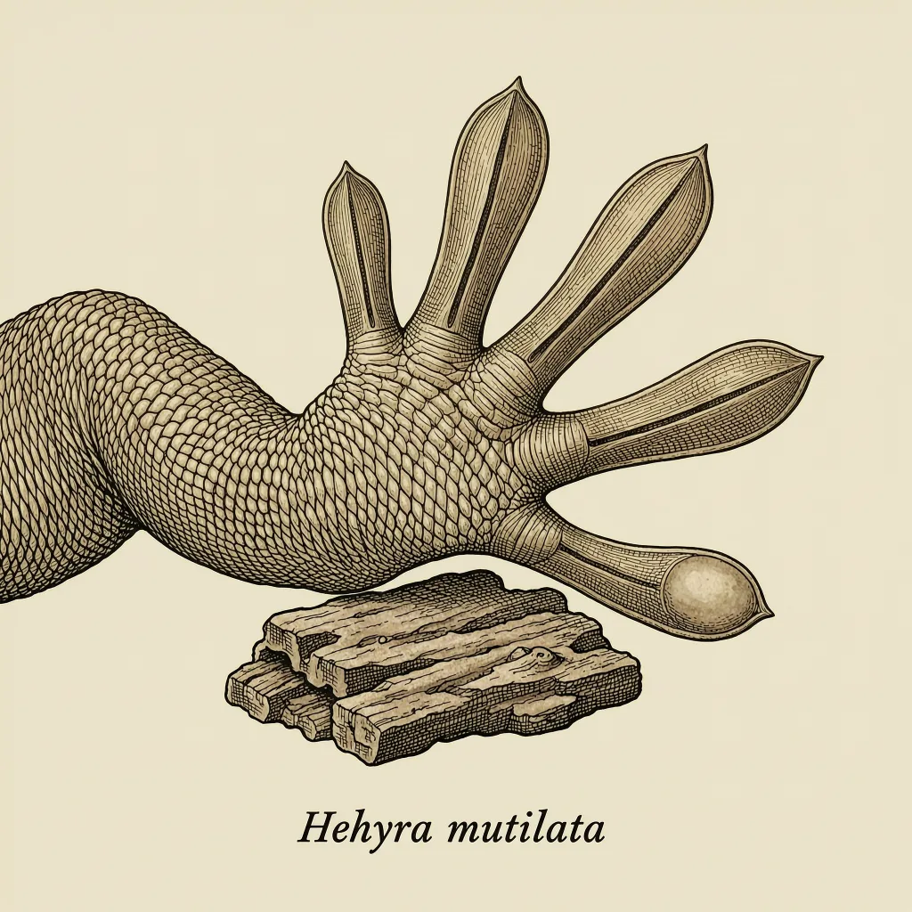

截趾虎是壁虎科截趾虎属的爬行动物，原生于东南亚，如今已随人类活动扩散到斯里兰卡、太平洋群岛乃至墨西哥西部。它身体圆润、皮肤细嫩，最内侧的脚趾没有爪子，趾瓣带缺刻，「截趾」由此而来。它夜间在民宅的墙壁与天花板高处捕食昆虫，被视为有益动物。
入夜之后，截趾虎才出现在房屋的墙壁与天花板高处，捕食室内的昆虫。这个物种原生于东南亚，如今斯里兰卡、中南半岛、印度、马来西亚、新加坡、菲律宾、新几内亚，直到太平洋群岛、塞舌尔、马斯克林群岛和墨西哥西部，都有它的记录——它自己走不了这么远，是随人类的货物被带出去的。截趾虎偏好林地、岩石区与人类居所，在夏威夷的沙滩地区尤其常见。
截趾虎的名字写在脚上。它的脚趾短小，基部略具蹼；趾下的片状结构呈角状，被一条中央沟槽分开，像被剪去一角，因此又叫裂足虎。真正好认的特征是最内侧那根脚趾没有爪子。这双脚让它能在垂直墙面上来去自如，也使它比其他常进屋的壁虎跑得更快。它身体比疣尾蝎虎圆润、皮肤更细嫩，背部灰褐或红褐色，幼体身上的金黄色斑点会随年龄增长逐渐消失。
同一种壁虎，在两个地方得到相反的判断。在夏威夷，它被当作外来入侵种；在中国，它于2023年被收进《有重要生态、科学、社会价值的陆生野生动物名录》。不少人并不排斥它，因为它夜行、行踪低调，还在墙壁高处捕食室内昆虫，被认为是有益的生物。它也会发出声音交流：一声近似「tock」的短叫，重复六到八次，声音逐渐增强，从天花板上方传下来。
